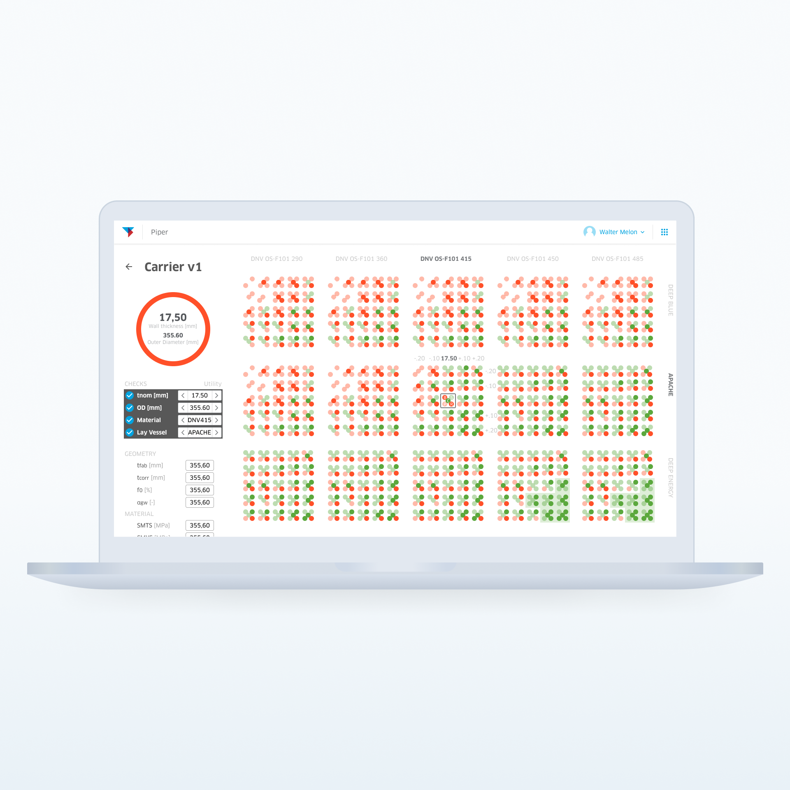

2019 - UX/UI Design - Three-month professional project
Software for Oil & Gas pipeline design. Summer internship project at the Digital Services and Innovation (DSI) department at TechnipFMC. DSI’s goal is to act as an innovation hub inside of the massive organization it is in. I joined three other interns (Helene Stenstadvold the designer, Anthony Genson the developer and Piri Babayev the data scientist) to form a squad to tackle one such innovation: re-thinking rigid pipeline design.
The project started with a kick-off discovery and framing (DnF) workshop with senior members of the department, stakeholders (aka the rigid pipeline engineering manager), and our day-to-day ally in the project: André Levy the rigid pipeline engineering intern. The purpose of the DnF was to help our squad establish an initial understanding of the problem domain, and try to start forming a shared vision for the project.
One of the outputs of the Discovery and Framing workshop
Following the DnF, we immersed ourselves in all things subsea engineering. This ranged from trying to use the current tools the subsea engineers had (a collection of spreadsheets for doing the several needed calculations to lay a pipe in the deeps of the ocean) to venturing downstairs to observe the engineers actually using it, to interviewing them about how they felt about designing pipelines. The outcome of this research phase solidified into two personas and their respective journeys: one had a management role, while the other was a newly arrived intern working on their first project. As we understood the different needs of these personas, it became clear our intervention shouldn’t be solely managerial focused, neither solely engineering focused. We could achieve a larger impact by building a common platform to enable both management and engineers to perform their best work.
We started designing the core of our product - basically an authoring tool for rigid pipelines - that would enable us to gather all the pipeline design information in one place (well, the Cloud). Having the data in one place would then make analyzing it much easier (than hunting for spreadsheets of past projects, scattered across different computers and servers). It could also help bootstrap the beginners workflow: “What do other projects similar to mine look like and what can I learn from them?”. The UI design process took a lot of iterations (again, going downstairs to usability test the medium- and high-fidelity prototypes with about a dozen engineers). At this point we were confident we could deliver an usable tool for performing pipeline design calculations. However, we had a technical breakthrough: thanks to the modern computational backbone implemented by our data scientist and our developer, we could perform the calculations about 60,000 times faster. This opened up the design space to make the most use of the newfound efficiency. Thus we performed a new iterative round of interaction design and usability testing.
Helene and André going through a medium-fidelity prototype
Creating a new rigid pipeline design on Piper through the wizard
Browsing the multitude of previous designs, in a single place with the help of visualizations

Calculating similar designs automatically to help the engineers spot possible solutions
We cleverly named our product “Piper” (Helene's idea). In its core Piper is a welcoming and supportive rigid pipeline design tool. It makes use of a wizard-like design to guide newcomers, while keeping fully functional keyboard-based navigation for expert users. Not only does it calculate what you asked it to, it can help you explore hundreds of variations at a glimpse. This massively reduced the time spent inputting data into the system, while allowing the engineers to think critically and make the crucial problem solving they need to do (and also thoroughly enjoy). Piper also lets you explore the wealth of information on all the other rigid pipelines already successfully deployed by the company, and build on the knowledge obtained from them.